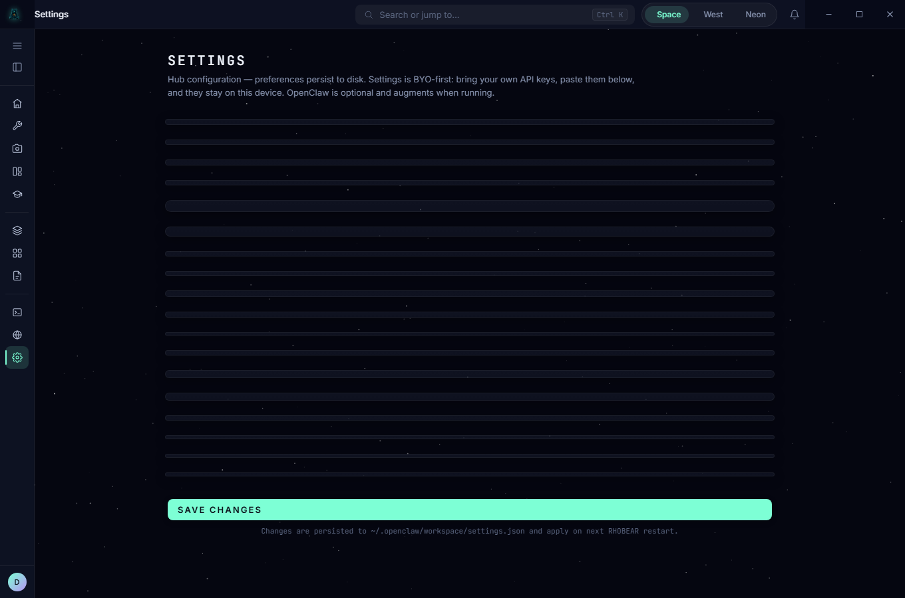

In writing — what each agent can and can't do.
"Read-only" shouldn't be a hope. The safety registry maps each agent to a permission profile the runtime enforces at the tool boundary — and it tells you exactly where that wall is concrete and where it's still being poured.
"Read-only worker" isn't a hope here — it's a permission contract the runtime enforces, not a sentence in a prompt.
worker_permissions.py maps profiles (read-only, code-edit, github-readonly, github-merge, shell-limited) to explicit tool allowlists, and separates capability from permission — an agent can be capable of review but still needs an enforced tool profile before it touches merge/comment tools.
GITHUB_MERGE: ("gh:pr:merge", "git:push_branch")
dig in
Enforcement is hard where we own the runtime — native, OpenClaw, local, and Pi paths get real allowlists enforced at the tool boundary. For Claude and Codex tmux sessions, the contract is currently injected and logged rather than syscall-sandboxed, with high-risk routes blocked elsewhere. We're telling you exactly where the wall is concrete and where it's still a painted line, because you'd find out anyway — and a tool that lies about its own security is the one you should never trust with merge rights.
The hard part isn't writing "read-only" in a system prompt — it's enforcing it when the model drifts. Build it yourself and you'll discover prompt-level permissions don't hold; you need enforcement at the adapter boundary, per profile, per role. That's months of unglamorous plumbing nobody gives you credit for.

